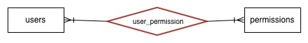
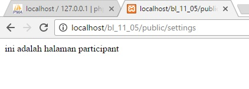

Autentikasi¶
dalam laravel terdapat keanehan
ketika mengakses Auth::user()->fieldTabelUsers
maka ketika sebelumnya membuatkan suatu deklarasi yang menggunakan object instansiasi Auth::user()
maka secara otomatis akan berubah itu
semisal adalah ketika kita membuatkan suatu deklarasi variabel yang berisikan Auth::user()
misal:
public function create()
{
$admin = new Admin();
$user = new User();
$this->authorize('create', $admin);
$user_dashboard = Auth::user();
$user_dashboard->pp_path = '/..'.$user_dashboard->pp_path;
return view('admins.create',compact('user','admin','user_dashboard'));
}
pada syntax $user_dashboard->pp_path = '/..'.$user_dashboard->pp_path; maka kita telah memberikan set pada property “pp_path” pada object Auth::user()
sehingga ketika di view (admmins.create)
maka akan menghasilkan adanya prefix berupa “../”
misal di view terdapat adany syntax:
<?php $src = url().Auth::user()->pp_path; ?>
<div class="profile-img"><img src="{{$src}}"></div>
maka hasil daripada $src adalah http://localhost/trukinidlima/public/../images/users/20160422022526.Under_construction.png
yang mana seharusnya http://localhost/trukinidlima/public/images/users/20160422022526.Under_construction.png
yang dimaksud disini adalah perubahan value property “pp_path” pada Auth::user()->pp_path
tentu ini akan menghasilkan adanya eror apabila dalam server terdapat
artinya Auth::user() ini telah masuk ke $user_dashboard sehingga ketika ada penggantian property id $user_dashboard maka akan mengganti Auth::user() juga
artinya new User() itu sama dengan Auth::user, hanya saja pada Auth::user() lebih khusus kepada si user
Autorize¶
Hak akses user atau biasa disebut autorization adalah proses dalam menangani apakah user dapat memproses suatu mekanisme sistem.
Contoh sederhana autorization adalah seperti user admin dengan user biasa, user admin mungkin dapat melakukan proses menghapus user, sedangkan user biasa belum tentu dapat melakukannya.
Dalam autorization dikenal 2 teknik yang biasa digunakan yaitu RBAC (Role Based Access Control) dan ACL (Access Control List).
Laravel telah mengintegrasi kedua teknik tersebut sehingga pengkonfigurasian dan penggunaan jauh lebih mudah.
Perbedaan mendasar keduanya adalah apa yang menjadi penentu dalam proses authorization
Dalam teknik RBAC maka yang menjadi penentu adalah dari role/group, setiap user akan memiliki role, dan role ini yang menjadi patokan dalam mengakses suatu resource.
Terdapat 3 tipe RBAC yang dapat digunakan yaitu :
1.**One User One Role**
Tipe RBAC ini adalah mengkonfigurasi bahwa satu user hanya memiliki satu role.
Caranya cukup menambahkan field role pada tabel users.

2.**One User Multi Role**
Tipe RBAC ini adalah mengkonfigurasi bahwa satu user dapat memiliki banyak role
Caranya dengan membuat tabel roles yang berisikan nama roles dan tabel user_roles yang mana memuat relasi antara tabel users dan tabel roles (berlaku many to many)

3.**One Access Permission for Specific User**
Tipe RBAC ini jauh lebih kompleks dengan mengkonfigurasi bagian mana (mekanisme sistem) yang dapat diakses oleh user tertentu, sehingga meski ada beberapa user yang memiliki role yang sama, mungkin tidak dapat mengakses suatu resource.
Proses autorization pada bagian ini menggunakan permission. permission inilah yang akan menentukan apakah user tertentu dapat mengakses suatu resource, seperti misalkan user ryan memiliki role admin, namun dia juga memiliki permission delete_user yang mana dapat menghapus user, sedangkan user Andy juga memiliki role admin namun tidak memiliki permission delete_user sehingga tidak dapat menghapus user.
Artinya role disini masih ada tingkatannya dalam mengakses sesuatu, dan setiap role belum tentu dapat mengakses permission yang sama
Cara ini masih belum diketahui oleh penulis secara pasti namun sepertinya cara ini menitikberatkan pada akses suatu resource.
Kemudian bagaimana dengan ACL (Access Control List)
Cara ini lebih seperti RBAC tipe 3 namun tidak mengimplementasikan adanya roles, tetapi langsung dengan menggunakan permission.
Teknik ACL ini dapat digunakan tanpa harus terdapat adanya tabel roles dan permission, konfigurasinya dapat ditulis di code/script (hard code)
Note
keterangan
kotak => tabel utama
belah ketupat => tabel yang menjadi penghubung (relasi many to many)
lingkaran => field
Note
Teknik ACL bukan berarti kita tidak akan menggunakan adanya role dari user, namun lebih kepada bahwa pengaksesan suatu resource menggunakan langsung permission yang telah dibuat/konfigurasi.
Hal yang menjadi patokan dalam teknik ACL ini adalah apakah suatu user memiliki ability(kemampuan) dalam mengakses suatu resource.
materi ability akan jauh lebih dijelaskan pada bahasan selanjutnya, tulisan ini hanya sekedar preview agar lebih memudahkan tentang pemahamaan ACL.
lebih jelasnya perbedaan antara ACL dan RBAC adalah pada RBAC kemungkinan besar membutuhkan tabel, sedangkan teknid ACL penggunaan tabel adalah opsional (meski membutuhkan adanya data yang memuat role user).
Dalam beberapa package yang menangani autorization sendiri biasanya menyertakan keduanya (RBAC dan ACL) sehingga pembeda antar keduanya hampir tidak ada.
Membuat hak akses dengan RBAC¶
Kali ini kita akan membuat hak akses dengan RBAC teknik pertama, caranya cukup mudah, kita hanya perlu menambahkan adanya field role pada tabel users.
studi kasus yang akan digunakan adalah suatu sistem memiliki 2 user level yaitu organizer (panitia) dan participant (peserta).
kita akan memberikan opsi pilihan user level saat pendaftaran user atau register.
Selanjutnya kita akan memberikan adanya 2 route dengan method get , yang mana di tiap halaman hanya dapat diakses oleh user level tertentu
Bagi organizer dapat melihat data event schedule sedangkan bagi peserta hanya dapat melihat data event history.
Penulis tidak akan menjelaskan bagaimana sampai data user tersebut terbuat, namun akan lebih menjelaskan pada bagian mana hak akses rbac ini akan digunakan
berikut adalah contoh data yang akan digunakan sebagai studi kasus event ini
sekedar catatan dalam validasi laravel kita dapat menentukan value input apa yang dapat diinput, seperti misalkan dalam pendaftaran user ini kita dapat memberikan validasi seperti berikut:
``'role' => 'in:organizer,participant'``
arti syntax diatas adalah input role hanya dapat valid(benar) jika value inputnya adalah organizer atau participant
selanjutnya kita akan membuat adanya middleware yang akan menjadi penyaring apakah halaman tersebut dapat diakses atau tidak (tergantung kondisi yang ada, dalam studi kasus ini akan digunakan user role yang dapat mengakses suatu resource)
untuk membuat middleware HasRole dapat menggunakan syntax php artisan make:middleware HasRole pada commannd prompt
selanjutnya kita akan merubah beberapa hal di middleware hasRole ini, yaitu ada bagian
kemudian akan kita tambahkan ke kernel sehingga akan disaring dahulu apakah dapat mengakses atau tidak
middleware HasRole:
class HasRole
{
public function handle($request, Closure $next, $role)
{
if ($request->user()->role == $role) {
return $next($request);
}
return redirect('home')->with('message', 'Anda tidak memiliki akses untuk halaman tersebut.');
}
}
menambahkan middleware ke kernel:
class Kernel extends HttpKernel
{
....
protected $routeMiddleware = [
....
'role' => \App\Http\Middleware\HasRole::class,
];
}
Menambahkan route dengan method get, yang mana dalam route ini akan disaring menurut role:
Route::get('event-schedule', ['middleware' => ['auth', 'role:organizer'], function() {
return "Berhasil mengakses halaman event schedule";
}]);
Route::get('event-history', ['middleware' => ['auth', 'role:participant'], function() {
return "Berhasil mengakses event history.";
}]);
Gambar : hasil dari pada teknik RBAC
login sebagai organizer (user ryan)
dapat mengakses event schedule
namun tidak dapat mengakses event-history, dan akan terlempar ke halaman home
login sebagai participant (user rani)
dapat mengakses event-history
namun tidak dapat mengakses event-schedule
Penjelasan kode
Dari contoh diatas kita menggunakan RBAC tipe 1 (satu user satu role).
Proses autorize disini dilakukan di dalam middleware (HasRole).
Saat route (event-schedule atau event-history) diakses maka ini akan mempassing role ke dalam method handle ($role).
Kemudian dalam method tersebut juga diberikan kondisi yang mana jika user memiliki role (yang didapatkan dari field role) itu sama dengan value role yang dipassing maka akan dapat mengakses ke request selanjutnya.
syntax $next($request); akan melanjutkan request ke selanjutnya (halaman yang dikehendaki, dalam studi kasus ini adalah return string).
syntax $request->user()->role adalah mengambil data di field role pada user yang telah login.
Ability, Policy, dan Gate¶
Ability (kemampuan) secara garis besar diartikan sebagai logic yang menentukan akses. Hal mendasar dalam penggunaan ability ini adalah kita akan menggunakan instansiasi user (yang telah login) yang mana selanjutnya akan dapat mendapatkan data baik di dalam tabel users atau dari tabel yang berelasi.
Selain itu juga kita dapat menggunakan adanya passing instance dari model lain dalam menggunakan ability ini. Sekedar preview nama variabal dari instance ini akan mengiktui nama model, seperti tabel users maka nama variabelnya adalah $user dan semisal tabel events maka nama variabelnya adalah $event
Policy adalah kumpulan dari ability yang dikelompokkan, sekedar catatan bahwa ability sebenarnya sudah dapat dituliskan di dalam AuthServiceProvider namun ketika ability ini terlalu banyak maka diperlukan suatu class yang dapat mengelompokkan ability, class tersebut adalah policy
Gate adalah facade yang akan digunakan dalam mengecek user memiliki ability yang digunakan untuk mengakses suatu resource.
Gate ini dapat diletakkan di controller, model, bahkan di view sehingga sangat fleksibel dalam memberikan adanya hak akses pada suatu resource.
Contoh penggunaan ability di dalam middleware
Penggunaan ability adalah dengan menggunakan method can, method ini akan mereturn boolean (true / false) yang mana jika true maka kita akan memiiki hak akses pada request yang dikehendaki.
Namun sebelumnya kita akan mendefinisikan ability tersebut, pendefinisian ability dilakukan di AuthServiceProvider dengan menggunakan gate (GateContract).
Perlu diketahui bahwa meski secara teknis ini hampir sama dengan RBAC yaitu dengan role user yang dimiliki, namun kita sebenarnya mendefinsikan adanya suatu ability yang mana ability tersebut menjadi patokan dalam mengakses di beberapa komponen (dapat dilakukan di controller, model dan view).
secara mudahnya kita dapat memberikan syntax ability seperti berikut:
$gate->define('nama-ability', function ($user) {
// logic ability
});
kita akan mempassing instansiasi user ke dalam closure parameter kedua, perlu diketahui bahwa instansiasi user ini adalah bentuk lain daripada Auth::user() yang mana kita dapat mengakses data di tabel users pada user yang login.
Menambahkan ability di dalam AuthServiceProvider
<?php
....
class AuthServiceProvider extends ServiceProvider
{
....
public function boot(GateContract $gate)
{
parent::registerPolicies($gate);
$gate->define('be-organizer', function ($user) {
return $user->role == 'organizer';
});
$gate->define('be-participant', function ($user) {
return $user->role == 'participant';
});
}
}
Membuat adanya gate di dalam middleware
<?php
....
class HasRole
{
....
public function handle($request, Closure $next, $role)
{
if ($request->user()->can('be-'.$role)) {
return $next($request);
}
return redirect('home')->with('message', 'Anda tidak memiliki akses untuk halaman tersebut.');
}
}
Penjelasan kode
Setelah kita login maka file AuthServiceProvideri ini akan dijalankan, kemudian akan menjalankan method boot, disinilah kita dapat mendefinisikan konfigurasi daripada ability.
Dalam contoh diatas terdapat syntax $gate->define('be-organizer', function ($user) {return $user->role == 'organizer';});, yang mana ability be-organizer akan ada jika parameter 2 bernilai true, parameter 2 yang dimaksud adalah closure yang mana menginstansiasi user (tabel users) yang sedang login kemudian mereturn apakah memiliki role organizer atau tidak.
Jika semisal parameter 2 bernilai false, maka user tidak akan memiliki ability be-organizer, hal ini juga berlaku
Selanjutnya ketika kita akan mengases route dengen method get (event-schedule dan event-history) dikarenakan adanya middleware role dengan adanya penambahan role yang diinput (jika event-schedule ada penambahan organizer dan event-history ada penambahan participant) yang mana penambahan ini akan masuk ke method handle parameter 3 ($role).
Selanjutnya kita akan mengecek dengan kondisi syntax if ($request->user()->can('be-'.$role)), yaitu jika semisal user ini memiliki adanya ability be-namarole yang dimaksud semisal be-organizer, maka akan dapat melanjutkan request middleware.
Perlu dicatat penggunaan ACL diatas memiliki perbedaan dengan RBAC, khususnya pada bagian kita tidak menentukan hak akses berdasarkan role tetapi menentukan/mengkonfigurasi hak akses dari role yang dimiliki.
Dan satu hal lagi yaitu pendefinisian ability ini bkan hanya memakai patokan user saja, namun juga bisa dengan model/tabel lain, intinya adalah kita dapat mendefinisikan beberapa logic dari beberapat tabel untuk dapat menentukan apakah user memiliki ability tersebut atau tidak, berbeda dengan teknik RBAC yang secara monoton menentukan hak akses berdasarkan dari role saja (bukan dari ability/kemampuan user dalam mengakses), mungkin contoh selanjutnya akan sedikit lebih menjelaskan.
Gambar : hasil dalam ACL ini tidak jauh berbeda dengan RBAC
login sebagai organizer (user ryan)
dapatmengakses event schedule
namun tidak dapat mengakses event-history, dan akan terlempar ke halaman home
login sebagai participant (user rani)
dapat mengakses event-history
namun tidak dapat mengakses event-schedule
Contoh penggunaan ability di dalam view¶
Contoh penggunaan dalam view adalah misalkan kita ingin dapat menampilkan conten yang mana user memiliki ability yang ditentukan, seperti misalkan pada suatu halaman akan menampilkan adanya link(anchor) dan terdapat link yang mana terdapat autorize ability.
Secara mudahnya kita dapat saja menggunakan instansiasi user secara langsung (Auth::user()) kemudian mengambil data yang diperlukan dalam autorize (seperti misal data role) namun ini sangat tidak memiliki adanya suatu pendefinisian yang lebih mendetail.
Apalagi jika semisal ternyata membutuhkan beberapa model/tabel yang terlibat dalam pembuatan hak akses dalam menampilkan konten di view.
Tentu ini jauh lebih mudah bila menggunakan ability dan kita dapat memasang method can (gate) di view.
Contoh penggunaan instansiasi user dalam autorize di dalam view:
@if (Auth::user()->role == 'organizer')
<p><a href="/event">Event</a></p>
@endif
@if (Auth::user()->role == 'participant')
<p><a href="/event-history">Event History</a></p>
@endif
Contoh penggunaan gate di view:
@can('be-organizer')
<p><a href="/event">Event</a></p>
@endcan
@can('be-participant')
<p><a href="/event-history">Event History</a></p>
@endcan
Penggunaan ability di dalam controller¶
Saat akan mengakses sesuatu di controller kita juga dapat memberikan autorize dari ability yang dimiliki user.
Namun perlu diketahui bahwa dalam penggunaan ability ini tidak dapat dengan menggunakan middleware role:… dalam menentukan pembatasan hak akses atau menggunakan method can.
Terdapat 2 cara dalam menggunakan ability di dalam controller yaitu :
- menggunakan facade gate diikuti dengan method allows yang mempassing nama ability
Gate::allows('nama-ability')
Dengan syntax tersebut maka ini akan mereturn boolean atau false, dan dari value boolean tersebut kita dapat menentukan langkah apa saja yang akan dieksekusi, semisal menampilkan view atau hal lainnya.
Dalam penggunaan facade ini maka akan digunakan konditinal (if structure).
- menggunakan method autorize()
cara ini tidak memerlukan adanya syntax conditional seperti allows, syntax ini hanya menggunakan method autorize() dan ketika kita tidak memilki adanya ability yang dibutuhkan maka proses selanjutnya akan tidak dapat dilanjutkan.
method autorize dapat dipassing dengan nama ability, sehingga ketika tidak ada maka akan melanjutkan ke halaman tidak boleh diakses.
Method ini secara default akan menghasilkan HTTPException dengan status code 403 Not Authorized jika user yang sedang login tidak dapat memvalidasi ability yang dibutuhkan.
Perbedaan keduanya sebenarnya sangat sedikit, hanya tergantung dalam mekanisme sistem yang akan dijalankan.
Dalam kasus yang lebih mudah adalah jika semisal kita memiliki adanya hak akses di mekanisme di dalam controller misal jika user memiliki ability tertentu maka akan menampilkan view tertentu.
Sedangkan penggunaan autorize ini digunakan di bagian paling awal dan ketika gagal akan melempar ke halaman error (akan menuju view error.403.blade.php).
Artinya pada facade gate masih dapat melakukan kondisional sedangkan method autorize tidak dapat dilakukan sama sekali.
Kalaupun menggunakan struktur kondisional (if) pada method autorize() maka ketika user tidak memiliki ability yang dimaksud tetap akan menuju view error.
Contoh penggunaan gate allows, kita akan menambah route dengan method get dan akan menuju method settings:
Route::get('settings', ['middleware' => 'auth', 'uses' => 'HomeController@settings']);
Dalam method settings ini akan dibuatkan sebuah pernyataan kondisional ketika memiliki adanya ability maka akan dapat megeksekusi view,
<?php
....
use Gate;
class HomeController extends Controller
{
....
public function settings()
{
if (Gate::allows('be-organizer')) {
return view('settings.organizer');
}
if (Gate::allows('be-participant')) {
return view('settings.participant');
}
}
}
Gambar :
login sebagai organizer
login sebagai participant
Peggunaan method autorize¶
Seperti yang telah dijelaskan diatas bahwa ketika kita menjalankan method ‘autorize’ maka jika ability yang dimiliki user tidak ada selanjutnya akan mereturn erorr bahwa user tidak terautoisasi (unautorized) dan melempar ke halaman error.403.blade.php.
Bahkan ketika dibuat struktur kondisional, method autorize ini juga tidak akan dapat mengembalikan nilai boolean (true/false), sehingga struktur kondisional juga tidak akan dapat disandingkan dengan method autorize ini.
Untuk contoh kali ini semisal kita akan membuat adanya ability premium access, dimana user yang memiliki tipe membership gold atau platinum yang dapat memiliki ability premium-access ini.
Berikut semisal data yang akan digunakan
Pembuatan ability (AuthServiceProvider) yang mana user dengan membership gold atau platinum dapat memiliki ability premium-access:
$gate->define('premium-access', function ($user) {
return $user->membership == 'gold' || $user->membership == 'platinum';
});
Pembuatan route dengan method get yang mengakses method premium:
Route::get('premium', ['middleware' => ['auth'], 'uses' => 'HomeController@premium']);
Pembuatan autorize pada method premium:
public function premium() {
$this->authorize('premium-access');
return 'Halaman premium...';
}
Gambar :
login dengan user yang tidak memiliki membership gold dan platinum , user ryan hanya memiliki membership silver
login dengan user yang tidak memiliki membership gold dan platinum , user rani dan robby memiliki membership gold dan platinum
pembuatan file views/403.blade.php sehingga ketika method autorize gagal maka akan dilempar ke view file ini Anda tidak berhak untuk mengakses halaman ini
Note
method autorize tidak akan mereturn value boolean
Semisal kita memberikan adanya struktur kondisional pada method premium di class HomeController ini:
public function premium() {
if($this->authorize('premium-access')) {
return 'Halaman premium...';
}
return 'Halaman non-premium...';
}
maka ketika autorize gagal tidak akan menjalankan syntax return ‘Halaman non-premium…’;, karena method autorize ini tidak mereturn boolean (true/false).
Passing model lain ke ability¶
Salah satu kelebihan dalam penggunaan ability adalah kita dapat menggunakan model lain sebagai bagian logic dari ability ini, sehingga tidak hanya menggunakan field role atau model user saja.
Semisal saja ketika akan melakukan proses edit data di tabel lain, dan data di tabel lain tersebut hanya dapat diedit oleh si pembuatnya, maka diperlukan adanya pengecekan dari sisi pembuat data.
Studi kasus adalah misal kita memiliki tabel event, data di tabel event ini hanya dapat diedit oleh si pembuat data event, maka diperlukan adanya field organizer_id yang dapat menyaring filter tersebut.
Misalkan kita memiliki data pada tabel users dan events sebagai berikut
- 2 orang organizer, Jajang dan Ucok.
- 1 orang participant, Beni.
- Event Meetup JS dengan organizer Jajang dan sudah dipublish.
- Event Meetup Laravel dengan organizer Ucok tapi belum dipublish.
AuthServiceProvider, Kita akan membuat ability yang mana akan mengecek apakah user id yang dimiliki user adalah yang membuat data event:
$gate->define('edit-event', function($user, $event) {
return $user->id == $event->organizer_id;
});
Penambahan route method get yang mana memberikan adanya parameter berupa id(event):
Route::get('edit-event/{id}', 'HomeController@editEvent');
HomeController, Pembuatan autorisasi edit event, pada parameter 2 kita mempassing model eloquent event yang mana datanya adalah sesuai dengan id yang dipassing:
public function editEvent($id)
{
$event = \App\Event::findOrFail($id);
$this->authorize('edit-event', $event);
return "Anda sedang mengakses halaman edit event " . $event->name;
}
Pemberian keterangan pada view home.blade.php:
<h3>Semua Event</h3>
@foreach (App\Event::get() as $event)
<p><strong>Event: {{ $event->name }}</strong></p>
<p>{{ $event->description }}</p>
<p>Tempat/Waktu: {{ $event->location }}, {{ $event->begin_date }} - {{ $event->finish_date }}</p>
@can ('be-organizer')
<a href="{{ route('edit-event',$event->id) }}">Edit Event</a>
@endcan
@endforeach